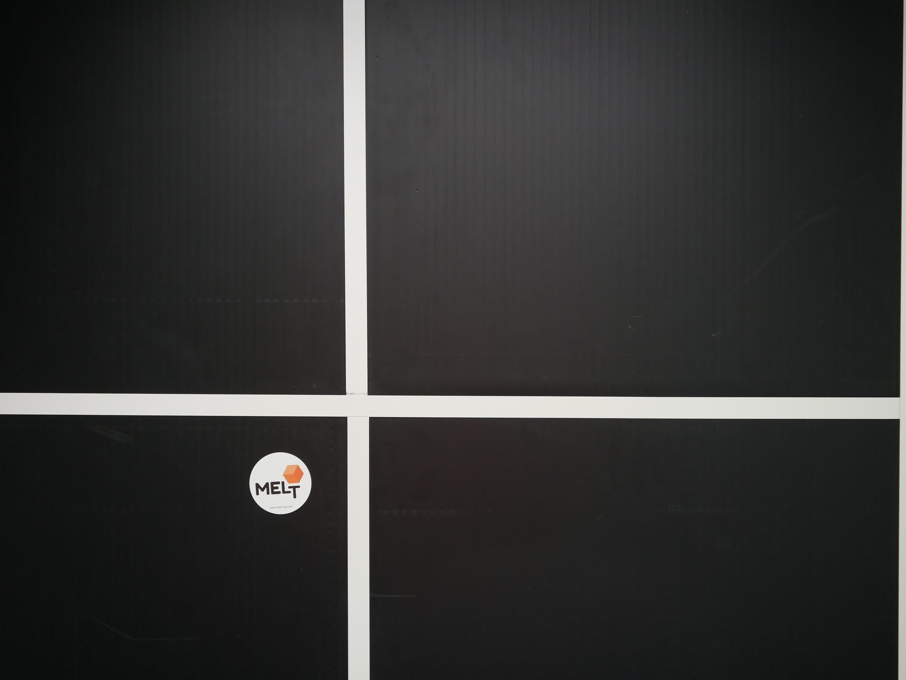
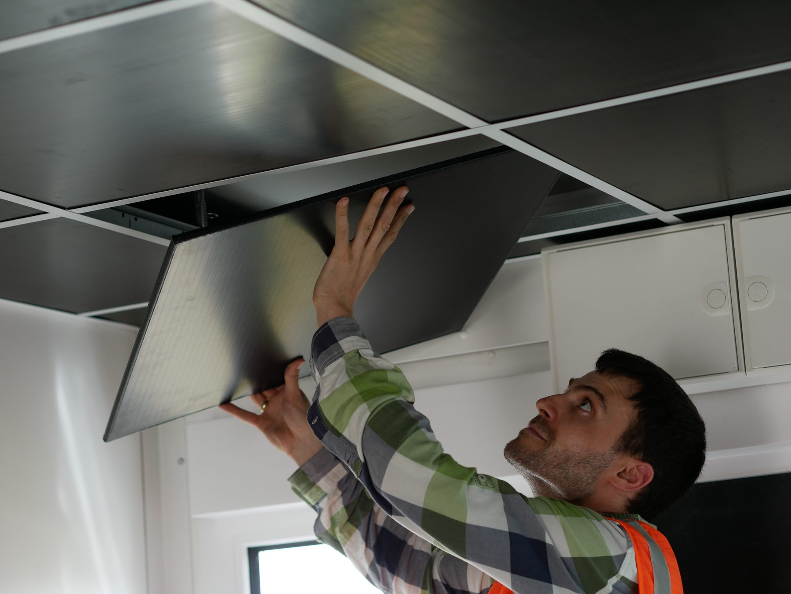
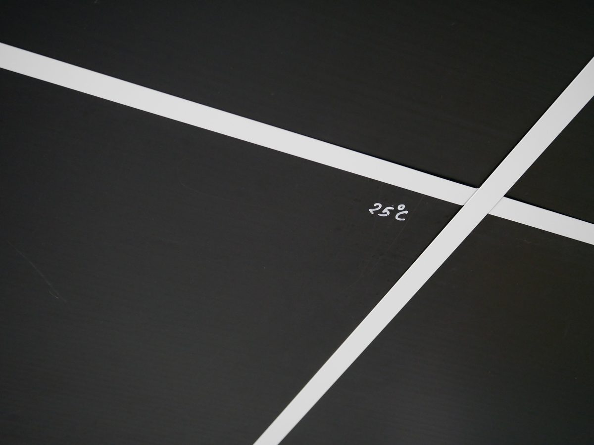

Effiziente, anpassbare Makroverkapselung für Phasenwechselmaterial — nur 1,2 cm dünn, aber puffert wie eine massive Betonwand.


Die MELT Plate wird zwischen tragenden Balken installiert — ohne Fachwissen in Sachen Energie oder Elektrik. Ein Handwerker, wenige Minuten, keine zusätzlichen Montageschritte auf der Baustelle.
Jede MELT Plate hat einen festen Schmelzpunkt — auf diesem Exemplar von Hand markiert. Erreicht die Raumtemperatur diesen Punkt, nimmt das Phasenwechselmaterial Wärme auf, statt sie in den Raum zu lassen.
Fällt die Temperatur wieder, gibt die Platte die gespeicherte Wärme zeitversetzt zurück. Kein Strom, keine Sensoren — nur Physik.

Für Anwendungen bei denen die Temperaturen zwischen 18°C und 25°C schwanken. Auch wenn aktive Kühlung möglich ist, erzielt die Flex die beste Reduktion der Kühllast.
Der Allrounder — gute Synergie mit Heiz- und Kühlsystemen, verhindert starke Überhitzung durch Sonneneinstrahlung und innere Lasten.
In Verbindung mit einer Flächenheizung wird daraus eine „Betonkernaktivierung ohne Beton". Bei starken solaren Lasten fängt das MELT Shield Hitze ab, bevor sie in den Raum gelangt.
Nur 1,2 cm dick, aber deckt Flächen von 0,2 m² bis 2,25 m²
Im Komfortbereich puffert sie so viel Energie wie eine 25 cm / 600 kg Betonwand
Wird in Leichtbaustrukturen integriert — wenige Handgriffe zwischen tragenden Balken, ohne komplizierte Installation
Beinhaltet Salzsole, die im Komfortbereich kristallisiert und die Temperatur konstant hält
Die Umhüllung besteht zu 100% aus sortenreinem Recyclingkunststoff
Lässt sich in Serienproduktion preiswert herstellen
Unser (pat. pend.) Verfahren ist extrem wandelbar — Größe und Dicke, Seitenverhältnisse, Schmelzpunkt und Stoffklasse, Farbe, Oberfläche
Bringt Klimaresilienz in etablierte Systeme oder neue Innovationen
Das Angebot schwankt mit Sonne und Wind — Ihre Verbräuche sollten es auch tun. Denn das ist gut für Umwelt und Geldbeutel.
MELT Plates können als thermischer Speicher verwendet werden, der wie ein schweres Betonhaus oder ein großer Wasserspeicher zu den optimalsten Zeiten über eine Wärmepumpe gekühlt oder geheizt wird. Spitzenlasten sinken, teure Zeiten werden ausgesessen.
Die Stärke der MELT PCMs ist die Pufferung großer Mengen Wärme in kleinem Temperaturbereich. In bewohnten Gebäuden ist dies das adaptive „Komfortfenster" nach EN 16798-1.
Sie puffern in 1,2 cm genau so gut Schwankungen ab wie 25 cm Beton. Die beste Wirkung wird in sehr leichten „Low-Tech"-Gebäuden erzielt.
Die MELT Plate active / MELT Shield eignet sich zur Einhaltung von Wärmeschutzstandards und als Ersatz für die Betonkernaktivierung.
In Anwendungen mit Flächenheizungen liefert die Plate die Grundlast, z. B. bei Nachtabsenkung ohne weiteren Energiebedarf und Lärm der Wärmepumpe.
Der Schmelzpunkt oberhalb der Raumtemperatur ermöglicht eine effiziente Nachtregeneration des passiven Hitzeschutzprodukts MELT Shield.
Wollen Sie mehr wissen? Schreiben Sie uns unter contact@melt-ing.com.
Kontakt aufnehmen →